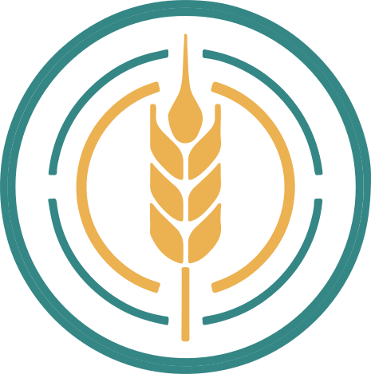

Campaign 2 · Case 09 · Leningrad, 1941

How can historians tell whether a collection survived a crisis as the same continuing collection, and what can each source actually prove?
This packet holds three kinds of material, and telling them apart is part of the work.
The rule that joins them: reconstructed game evidence can support reasoning inside the case. It cannot establish what happened to the real collection. A documented source can establish what happened to the real collection. It cannot prove any event in the game. Every card carries a SOURCE STATUS line. Read it before you read the card.
Write one term from the bank on each line. Use each term once. The terms are not in the same order as the statements.
Six sources make the case inside the game. All six were written for the game. Read the SOURCE STATUS line before you read the card.
Inside the case this is what the word siege means on the ground. It establishes no real day, queue or ration; the documented ration is on Source H.
Who gives it. Dr. Morozov, a keeper counting seed tins by lamplight in the vault, written for the game.
Testimony written for the game. Dr. Morozov is not a surviving witness. What he says can be tested against the other game evidence; it cannot establish anything about a real person or a real count.
Row on row of tins and cloth envelopes, frost-furred, labelled in a dozen careful hands. One tin of rice, dated 1938, its wax seal whole under the thumb.
EXTRACT — TAA PRESERVATION SCAN, sampled shelvesA reading invented for the case. It can settle the game's question about consumption. Its last line is the game's simplification; the documented movement of the real collection is on Source H, and neither layer settles the other.
The ledger lies open in the office, columns of numbers in faded ink, entries dated straight through the siege winters, the handwriting thinning but never stopping. The post-war pages continue the numbers.
EXTRACT — TAA CROSS-REFERENCE, accession continuityAn invented record. Inside the case it is the strongest evidence that the numbered collection was not replaced. It is not a real register and establishes nothing about one.
What it is. A recovered recording of Nikolai Ivanovich Vavilov, the botanist who built the collection expedition by expedition, addressing a long-ago meeting — and the Archive's annotation of what became of him.
EXTRACT — TAA ANNOTATIONA record written for the game, and the words the game gives him are invented. The annotation's dates happen to agree with the documented record on Source G: the document corroborates the annotation, never the reverse.
What it claims. Under emergency authorisation, the staff consumed the collections between December 1941 and March 1942 — the rice, the tubers, the grain stores — and the post-war bank was restocked from outside sources. Signed by the surviving staff, and countersigned at the bottom in a firm hand: witnessed on site — Director N. I. Vavilov.
What can be seen in it. Correct wartime paper. The correct typewriter for the office. Aging ink. Typed clean and complete from first line to last, with no strike-out, no thinning hand and no trace of the four starving months it describes.
This is the record the case exists to test. It is invented, and so is everything inside the game that can test it. Its finish is a reason to look closer; it is not one of the tests.
Answer from the case file alone. The documented sources have not arrived yet. You are writing down what you would go and look for.
Part A — Name one kind of evidence you would want to see before you believed that a collection after a crisis is the same continuing collection, and not a new one. Part B — Name one sign that would tell you a collection had been rebuilt from scratch instead.Where it comes from. The Crop Trust, the international organisation that supports the world's genebanks.
It gives no month for the arrest, no count of the staff who died and no names. It establishes the dates; it establishes nothing about the game.
Where it comes from. I. G. Loskutov, writing in 2021 in the Institute's own journal from its archives: the wartime orders, the staff personal files and the papers of the keepers.
It establishes what happened to the real collection. It establishes nothing about the game's keeper, scan, ledger or report, and its count of the dead is one archival account's count; other published accounts count differently.
The N. I. Vavilov All-Russian Institute of Plant Genetic Resources (VIR), a Federal Research Center, still holds the collection today under Vavilov's name.
Present identity only. The page as consulted carried no siege narrative, and this packet borrows none from it.
Use the figure, Source G and Source H. Answer in your own words.
Part A — Two dates.Collection continuity does not require physical immobility or perfect survival. The same accessions, recorded, kept by named custodians, reproduced and regenerated, are the same collection.
Part A — Fill the five boxes. Box 1: what the collection was before the siege. Boxes 2 to 4: for each change, what stayed the same and shows it is still the same collection. Box 5: what it is after.
Write reconstructed or documented in the status column. Then complete every cell. The last column asks how the source corroborates another source, or qualifies it.
| Source | Status | What it supports | What it cannot establish | How it corroborates or qualifies another source |
|---|---|---|---|---|
| B · Dr. Morozov's testimony | ||||
| C + D · The Archive's scan and ledger cross-reference | ||||
| E · The recovered Vavilov record | ||||
| G + H · The documented record |
Stay inside the game: use Sources B to E only. For each test, write what the report claims and what the game's own evidence shows.
| Test | The report claims… | The game's evidence shows… |
|---|---|---|
| CHRONOLOGYcheck against Source E | ||
| COLLECTION CONDITIONcheck against Source C | ||
| ACCESSION RECORDcheck against Source D | ||
| CORROBORATIONdo B, C and D agree with each other, or with the report? |
Correct paper, correct typeface, aging ink, a clean finish: not one of them is proof that the report is forged. Its clean finish is a reason to look closer. It is not one of the four tests.
All four parts. Parts A, B and D are about the real collection, judged from Sources G to I and the two figures. Part C is where the game's evidence belongs.
Think about any collection, anywhere — a library, an archive, a herbarium, a seed bank — after any crisis. Do not retell Leningrad.
Part A — Name one kind of evidence that would best show the collection after the crisis is continuous with the one before it, rather than rebuilt from scratch. Part B — Name a second, different kind. Part C — Explain why each shows continuity rather than replacement. Use the method, not this case.Campaign 2 · Case 09 · Leningrad, 1941
This case runs over three ordinary class periods. Students decide whether a seed collection survived the Siege of Leningrad as the same continuing collection, and say what each source can and cannot prove about it. The siege, the collection, Vavilov's arrest and death, the staff who starved beside the seed, and the postwar regeneration are historical and documented. The keeper, the Archive's scan and ledger, the recovered recording and the Consumption Report were written for the game.
Print the eight-page Student Mission or the ten-page Accessible Mission. Either packet carries the whole reconstructed dossier, all three documented source cards and both figures, so either is completely teachable with no device in the room. Read the source-status notice on learner page 1 yourself first, and plan to read it aloud. The content is emotionally heavy: people died of hunger at their desks. Say so plainly and once.
Vavilov built the collection and was not there to keep it. He was arrested in 1940 and died in prison in Saratov in January 1943, while his colleagues in Leningrad kept the collection through the siege. A class that finishes this unit believing Vavilov starved in the vault has learned the wrong story, however well it answers everything else.
| Route | What students do | What you must still supply |
|---|---|---|
| Game route | Play Campaign 2, Level 2. On the street they take in the siege; in the vault they hear the keeper and examine the collection; in the office they read the ledger, play the recovered Vavilov record and read the Consumption Report, then validate one of three records. Every one of those six evidence objects is also printed as Sources A to F, in the same order. | Check first that your class can reach it. Campaign 2 has no level selector and no shortcut; a class arrives here only by finishing the first campaign and the two levels before this one. If yours has not, use the other route. Documented Sources G to I exist only in the packet, on both routes. |
| No-game route | Read Sources A to F on learner pages 2 and 3, then Sources G to I on page 4, and work the same eight tasks from them and the two figures. | Five minutes of framing. Read the source-status notice aloud, and say out loud that Sources A to F were written for a game before anyone meets the keeper. |
Two documented sources carry this case, and they carry different halves of it. Source G, the Crop Trust, supplies the dates that fix Vavilov's strand: arrested in 1940, dead in Saratov on 26 January 1943. Source H, Loskutov's archival history in the Institute's own journal, supplies everything about the collection: the failed evacuation, the division and sealing, the partial evacuation to Krasnoufimsk, the re-sowing under fire, the deaths, the losses and the 1946 check. 3 · Separate Vavilov's Timeline from the Siege is built on G; 4 · Trace the Collection Through Crisis and 7 · Make a Collection Continuity Judgment are built on H.
Two, and they pull in opposite directions. The game's scan says the seed never left the room, and students carry that over as history. The documented record says the collection was divided, partly flown out, replanted and partly lost — and students then conclude it cannot be the same collection. 4 · Trace the Collection Through Crisis exists to close both: continuity does not require immobility or perfect survival.
Collect the whole packet at the end of period 3. 7 · Make a Collection Continuity Judgment is the graded culminating product; it requires a judgment about the real collection, the strongest documented links, one explicit limit on testimony or reconstructed evidence, and why crop diversity mattered beyond the siege. 8 · Transfer the Method is the transfer check, answered about no particular collection.
“A city was starving, and inside it was a building full of seed that could have been eaten. The people who kept it did not eat it, and some of them died a room away from it. This week you are going to do two things with that. First, work out from the records what actually happened to the seed — it moved, it was replanted, some of it was lost — and decide whether it is still the same collection. Second, say which of the things you know come from a documented record, and which come from a story a game told you.”
If devices fail mid-period, switch to the no-game route and change nothing else. If you lose a period, protect 3 · Separate Vavilov's Timeline from the Siege, 4 · Trace the Collection Through Crisis and 7 · Make a Collection Continuity Judgment; 1 · Build the Case Vocabulary can be finished as homework and 5 · Compare What the Sources Can Establish can be worked in pairs. Dropping 4 · Trace the Collection Through Crisis is the one cut that breaks the lesson, because it is the only place continuity is built rather than named.
Three class periods. Students learn seven terms, write a provisional continuity test before the documented sources arrive, read six reconstructed records and three documented cards under printed status lines, read a two-strand chronology that keeps Vavilov apart from the siege, trace the real collection through movement, reproduction, loss and regeneration, decide what four sources contribute, cannot establish and corroborate, test a competing record inside the game by four things other than its appearance, write a four-part continuity judgment, and apply the method to a collection the packet never names.
How can historians tell whether a collection survived a crisis as the same continuing collection, and what can each source actually prove?
| Standard | Status | Where it is measured, and the limit |
|---|---|---|
| C3 D2.His.1.6-8 | Directly assessed | Task 3 reads a two-strand chronology and Task 4 places documented events in order in a chain. Limit: the chronology is supplied, not researched. |
| C3 D2.His.2.6-8 | Directly assessed | Task 4 classifies what changed and what continued across the crisis, and Task 7 judges continuity. Limit: one collection in one crisis, from a supplied estate. |
| C3 D3.1.6-8 | Directly assessed | Task 5's status column and Tasks 3, 4 and 7's use of the documented sources. Limit: sources are supplied and one class of them is openly invented. |
| C3 D3.2.6-8 | Directly assessed | Task 5's contribution, limitation and corroboration columns; Task 6's corroboration test. Limit: four sources, judged inside a bounded estate. |
| CCSS RH.6-8.1 | Directly assessed | Tasks 4, 5 and 7 require specific documented evidence cited to its source. Limit: the sources are short summaries printed in the packet. |
| CCSS RH.6-8.7 | Directly assessed | Tasks 3, 4 and 7 integrate the two figures with the written sources. Limit: the figures are curriculum schematics with printed status. |
| CCSS WHST.6-8.1 | Directly assessed | Task 7 is an argument from evidence with an explicit qualification. Limit: four short parts, scored for reasoning rather than craft. |
| CCSS RH.6-8.9 | Supporting | Tasks 5 and 6 set testimony written for the game beside documented archival research and ask what each can carry. Limit: no task performs a primary-versus-secondary analysis, so the standard is supported rather than directly assessed. |
| CCSS WHST.6-8.2 | Supporting | Task 4 Part B and Task 7 Part D are short explanatory products. Limit: practised and scored for reasoning; no writing-process instruction is given. |
Contextual science content, no science standard. Crop genetic diversity, germplasm and ex situ conservation are the content the case uses, and they are held as contextual. No NGSS alignment is claimed, directly or otherwise: no task asks a learner to construct a scientific explanation, model a natural system or analyse data.
| Term | Working definition used in this packet |
|---|---|
| accession | One sample of seed or plant material held under its own number, with a record of where it came from. |
| collection continuity | A collection after a crisis being the same continuing collection as before it, rather than one rebuilt from scratch. |
| ex situ conservation | Keeping a crop's genetic diversity alive away from the fields where it grew, as a seed bank does. |
| germplasm | The living material of a crop — seed, tubers, cuttings — from which new plants can be grown. |
| provenance | The documented origin of a thing, and the record of where it has been and who has held it since. |
| seed bank | An institution that stores and regenerates seed samples so that crop diversity is not lost. |
| siege | The surrounding of a city by an army so that people and supplies cannot get in or out. |
Success criteria. I can say when Vavilov was arrested and when the siege began, and keep the two apart. I can explain why a collection that moved, was replanted and lost part of itself can still be the same collection. I can say what each source can and cannot establish, and which source corroborates which. I can name one thing my judgment does not settle.
Materials and preparation. The learner packet and a pencil. Devices only if you are taking the game route. No preparation beyond reading the source-status notice and this page. Krasnoufimsk is the one unfamiliar place name; it is a town in the Urals where part of the collection and staff were kept during the siege, and the packet says so where it uses it.
Three periods of about fifty minutes. Every numbered Student task appears below in the order the packet prints it. If your periods are shorter, move the reading in period 1 to homework rather than cutting a task.
Ask: “When the class library is moved to a new room over the summer, is it a new library?” Then ask what would make it a new one — and listen for the records. The continuity chain labels every link with the record or custodian that carried identity across it.
Ask what each source would still be true of if the game had never been written. One of the four survives that question unchanged, one survives it only because a document happens to agree with it, and two do not survive it at all. That is the column they are being asked to fill.
The three natural stopping points are the end of the reading in period 1, the end of 4 · Trace the Collection Through Crisis in period 2, and collection at the end of period 3. Nothing needs collecting before the end: 2 · Set a Continuity Test is provisional and is read rather than marked, and every later task depends on the packet staying with the learner.
7 · Make a Collection Continuity Judgment is the graded product and carries the analytic rubric; 3 · Separate Vavilov's Timeline from the Siege to 6 · Test the Consumption Report are the evidence work supporting it, and 8 · Transfer the Method is scored separately as transfer. 2 · Set a Continuity Test is not scored for correctness; it records where a learner started. Grade the reasoning on the page, never game progress.
| Task | Support, and what it does |
|---|---|
| 3 · Separate Vavilov's Timeline from the Siege | Scored. Part A's two dates are supplied as a worked example. Where Vavilov was, who kept the collection, and the separating sentence are all still independent. |
| 4 · Trace the Collection Through Crisis | Scored. Boxes 1 and 5 of the chain are given. The three middle boxes, Part B and Part C are independent in both editions. |
| 5 · Compare What the Sources Can Establish | Scored. The status column is printed, and the keeper row is worked in full: nine fields instead of sixteen. The other three rows are independent. |
| 6 · Test the Consumption Report | Scored. The report's four claims are printed so they are not recopied. What the game's evidence shows, the verdict and the appearance response are independent. |
| 8 · Transfer the Method | Scored. The two open evidence judgments become one bounded choice from four printed kinds, two sound and two weaker than they look; the explanation is the same. |
| Route only | Sentence frames in 2 · Set a Continuity Test and 7 · Make a Collection Continuity Judgment; lower-density dossier cards over four pages instead of two. No obligation changes. |
Bullets, dictation and scribing are accepted in every constructed-response field, and every printed mark and choice has a persistent digital control.
| What a student says | Why it fails, and where to send them |
|---|---|
| “The seeds never left the room, so the collection survived.” | The game's scan says so; the documented record does not. The collection was divided, partly flown to Krasnoufimsk, replanted in fields and checked in 1946. Source H; 4 · Trace the Collection Through Crisis Part C. |
| “Part of it was lost and part was moved, so it is a different collection now.” | The opposite error. Identity was carried by accessions, records and named custodians through every change. 4 · Trace the Collection Through Crisis Part B. |
| “Vavilov guarded the collection during the siege.” | He was arrested in 1940 and died in Saratov in January 1943. The keepers were his colleagues. 3 · Separate Vavilov's Timeline from the Siege. |
| “Nine staff died” — or twelve, or thirty, as settled fact. | Published accounts disagree. The one archival account here counts more than twenty and names many; teach every count with its source attached. |
| “The report is typed too clean, so it is a forgery.” | A clean document can be genuine. The report fails the chronology, condition, record and corroboration tests; its finish is a prompt to run them. 6 · Test the Consumption Report. |
| “Dr. Morozov is a survivor who saw it happen.” | He was written for the game. That his detail about the rice matches a documented death means the game drew on the record, not that the keeper is a witness. 5 · Compare What the Sources Can Establish row B. |
| “The recovered record proves the dates, because it matches the Crop Trust.” | The document corroborates the game's annotation, never the reverse. A reconstruction that agrees with a source is still a reconstruction. Row E. |
| “They should have eaten it; seeds are food.” | A fair question, and the case does not moralise it. The packet asks why crop diversity mattered beyond the siege, and accepts an answer that still finds the choice terrible. 7 · Make a Collection Continuity Judgment Part D. |
Every person, scan, ledger line and report in Sources A to F was written for the game. The siege, the arrest, the deaths, the movement, the losses and the regeneration are real and are documented on the three documented cards. A conclusion about the game's case proves nothing about the real collection, and a documented record is never evidence that the game's scene happened. If gameplay is unavailable, nothing changes. The dossier is the assessment record in both routes, no task needs a line that appears only in play, and no rubric criterion refers to the game.
| Source | Status | Contributes | Cannot establish alone | In the packet |
|---|---|---|---|---|
| A · the besieged street | reconstructed game evidence | What siege means on the ground inside the case: the queue, the notice, the guns. | Any real day, queue or ration. | Student page 2 · Accessible page 3 |
| B · Dr. Morozov | reconstructed game evidence | The keeper's account inside the case: the work went on, the collection was not eaten, a colleague died beside the rice. | Anything about a real person, death or count. He is not a witness. | Student page 2 · Accessible page 3 |
| C · the preservation scan | reconstructed game evidence | Inside the case, intact pre-war seals, matching counts, no consumption. | The condition of any real shelf, or any real movement. | Student page 2 · Accessible page 3 |
| D · the accession ledger | reconstructed game evidence | Inside the case, continuous numbering 1940 to 1946 and no renumbering. | What any real register contains. | Student page 2 · Accessible page 4 |
| E · the recovered Vavilov record | reconstructed game evidence | Inside the case, the annotation that breaks the report's countersignature. | Anything about the real Vavilov; its dates are corroborated by G, not the other way. | Student page 3 · Accessible page 4 |
| F · the Consumption Report | reconstructed game evidence | The claim the case tests, and the clean finish that is not a test. | Anything about the real Institute. | Student page 3 · Accessible page 4 |
| G · the Crop Trust account | documented | Vavilov's dates: arrested 1940, died in Saratov 26 January 1943; 250,000 samples; staff who refused to eat the seed. | The arrest month, any count, any name, any movement of the collection. | Student page 4 · Accessible page 5 |
| H · Loskutov's archival record | documented | The collection's wartime chain: failed evacuation, division, Krasnoufimsk, re-sowing, named deaths, losses of about 40,000, the 1946 check. | Anything about the game; a settled death count beyond its own. | Student page 4 · Accessible page 6 |
| I · the Institute today | documented | The Institute's present name and continued existence. | Any siege-period fact. | Student page 4 · Accessible page 6 |
| Two figures | curriculum-original schematic | The two strands on one axis; the continuity chain with its links labelled. | Nothing. A figure that organises evidence is not evidence. | Student pages 5 and 6 · Accessible pages 7 and 8 |
Chronology first: Vavilov's strand and the Institute's strand do not touch after 1940, which is what makes the report's countersignature impossible inside the game and what keeps the real keepers in view outside it. Provenance second: every link in the documented chain — the inventory after the failed evacuation, the sealed rooms and named key-holders, the duplicates flown to Krasnoufimsk, the re-sowing from the same accessions, the 1946 check — carries identity across a change. Corroboration third: the documented record corroborates the game's annotation and qualifies the game's scan; nothing runs the other way. The judgment follows: the real collection was substantially continuous through documented custodianship and conservation, and it moved, was replanted, and lost about 40,000 accessions on the way.
The Consumption Report fails inside the game on four tests, and teachers should hold the class to all four: it is countersigned by a man the game's own annotation puts in a Saratov prison; it reports consumption the scan finds no trace of; it implies a rebuilt bank the ledger's continuous numbering contradicts; and it stands alone against three sources that agree with each other. Its finish is the trap. The Phase 1 audit of this campaign flagged neatness-proves-forgery as the misconception to refuse, and the packet refuses it in print.
People starved to death beside food. The documented record names them and records the cause in their personal files, and the packet says so without embellishment. It does not supply a quotation for Vavilov, a heroic count, or a verdict on whether the staff were right. 7 · Make a Collection Continuity Judgment Part D asks why the diversity mattered beyond the siege and accepts any sourced answer, including one that still finds the choice unbearable. Keep the discussion there.
| Look for | Secure | Not yet |
|---|---|---|
| The two timelines | Task 3 puts Vavilov in prison during the siege and names the real keepers. | Task 3 has Vavilov at the Institute, or names no keeper. |
| The chain | Task 4's middle boxes name a record, a custodian or an accession, and Part B says why change is not a break. | The middle boxes name places, or Part B says the loss ended the collection. |
| Status and direction | Task 5 classifies every row correctly and says the document corroborates the game's record, not the reverse. | A reconstructed row is called documented, or corroboration runs from game to history. |
| The judgment | Task 7 Part A survives the losses; Part C names a source and a limit. | Part A ignores the losses, or Part C is blank. |
| Transfer | Task 8 answers about an unnamed collection. | Task 8 retells Leningrad. |
| Criterion | 4 — Exemplary | 3 — Proficient | 2 — Developing | 1 — Beginning |
|---|---|---|---|---|
| 1 · Chronology and separation | Places arrest, siege and death correctly, states where he was while the city was besieged, names the documented keepers and explains what the separation makes impossible. | Places the dates correctly and keeps Vavilov apart from the siege staff. | Dates correct but Vavilov's absence is not used for anything. | Places Vavilov at the Institute during the siege. |
| 2 · Provenance and continuity | Names the record or custodian that carried identity across the move, the reproduction and the loss, and explains in provenance terms why change is not a break, with the losses stated. | Names what carried identity across the changes and says why the collection is still the same. | Describes the changes without saying what carried identity, or omits the losses. | Treats movement or loss as the end of the collection, or the game's immobility as history. |
| 3 · Source status and corroboration | Classifies every source correctly, gives each a genuine contribution and limit, and states the direction of every corroboration. | Classifies correctly and gives each source a contribution and a limit. | Classifies correctly but gives all rows comparable weight, or runs corroboration backwards. | Treats reconstructed evidence and documented evidence as interchangeable. |
| 4 · Qualified judgment and transfer | A continuity judgment that survives the losses, two named documented links, an explicit limit on testimony or reconstruction, a sourced reason the diversity mattered, and a transfer answered by method. | A judgment, two links, one limit, one reason, and a transfer about an unnamed collection. | One link, or a limit that doubts everything equally, or a transfer that leans on this case. | No qualification, or the transfer retells Leningrad. |
A packet that states that Vavilov was at the Institute during the siege, or that he guarded the collection, scores 1 on criterion 1 whatever else is on the page. It is the one claim this case was written to make impossible.
Score against the same four criteria and the same exemplars. Six obligations are reduced by design — the two dates supplied, the chain's ends given, the status column printed, the keeper row worked, the report's claims printed, and one bounded choice in transfer — and nothing else is. A bounded choice supported by a sound reason is worth exactly what the open answer is worth.
Point values are deliberately not printed. Weight the four criteria to suit your gradebook; if you have no reason to do otherwise, weight criteria 2 and 3 above the others, because they are the two that cannot be earned by careful transcription.
Three published sources support everything this packet claims about the real world. Nothing else in the packet is a claim about the real world.
| Source | What it supports here | Limit |
|---|---|---|
| Crop Trust, “Nikolai Vavilov: The Father of Genebanks” croptrust.org | Vavilov's birth in 1887; 115 expeditions to 64 countries between 1916 and 1933; the 1926 centres-of-origin theory; more than 250,000 seed samples; arrest in 1940 during an expedition in western Ukraine; a death sentence commuted to twenty years; death in incarceration in Saratov on 26 January 1943 of starvation; the 900-day siege during which the staff refused to eat the seeds even as they starved to death; genebanks as a standard part of the food system. | No arrest month, no staff count, no staff names, and nothing about how the collection was moved, divided, evacuated or reproduced. |
| I. G. Loskutov, “Wartime activities of the Vavilov Institute”, Proceedings on Applied Botany, Genetics and Breeding, 2021, 182(2):151–162, DOI 10.30901/2227-8834-2021-2-151-162 | From the Institute's archives: the 22 June 1941 invasion; the failed rail evacuation of 25–27 August and the ring closing on 8 September 1941; the division, tying, sealing and inventory of the collection; the Pavlovsk potato harvest under fire; famine from November 1941 and the 125-gram ration; named staff dead of hunger and exhaustion at their posts and the count of more than twenty; more than thirty researchers lost in the first autumn; the flights and the Ladoga evacuation to Krasnoufimsk and the more than 100,000 accessions kept there; potato and cereal re-sowing in 1942 and 1943; losses of about 40,000 accessions; the February 1944 return; the 1946 check and regeneration programme; the Institute's present name. | Nothing about the game. One archival account's death count, not a settled one. No arrest month, and the lifting of the siege only through the February 1944 return. |
| N. I. Vavilov All-Russian Institute of Plant Genetic Resources (VIR), “About institute” vir.nw.ru | The Institute's present name and status as a Federal Research Center, and its continued existence today. | As consulted, the page carried no siege narrative, count or date, and none is borrowed from it. |
Do not extend the real-world layer beyond these three. If a class asks for a figure the packet does not give — how many staff died in all, how many accessions the Institute holds today, the day the siege was lifted — that is a good question and a research task, not a claim this packet is in a position to make.
A learner who never launches the game can perform every assessed task from the packet alone. Nothing is held back for players and no task depends on a line that appears only in play. On the game route the six evidence objects are met in this order; on the no-game route they are read in it.
If a device fails, a projector dies, or the game will not reach this level, run the no-game route and change nothing else: same eight tasks, same key, same rubric. If a printer fails, the two learner editions are equivalent and either may be shared between a pair. If you have half a period rather than a whole one for period 3, run 7 · Make a Collection Continuity Judgment and set 8 · Transfer the Method as homework; do not run 8 · Transfer the Method first, because it is the only task in the packet that cannot be answered before the method has been used once.
Campaign 2 · Case 09 · Leningrad, 1941
Completed exemplar. Exact-match bank: each term is used once, in the wording printed on the learner page. The statements are deliberately not in bank order. Both learner editions place all seven.
No variation is accepted here: the bank is exact-match and holds no decoys. The pair to watch is accession and collection continuity — the first is the numbered unit a collection is counted in, the second is the property of the whole that Tasks 4 and 7 ask the learner to judge.
Task 2 is not keyed. It records a provisional continuity test taken before the documented sources arrive, and there is no correct answer to it. Guidance for reading it is in the Teacher Guide.
Completed exemplar. In the Accessible edition Part A is supplied complete as a worked example under a declared adaptation, so the learner answers three parts; the Student edition answers four. Parts B, C and D are identical in both.
Part A — Vavilov was arrested in 1940. The siege ring closed on 8 September 1941.
Part B — During the siege winter of 1941–42 Vavilov was in prison, far from Leningrad, and he died in incarceration in Saratov on 26 January 1943 (Source G). So any record that places him at the Institute during the siege — signing, witnessing, guarding — describes something that could not have happened, and that is a test a historian can run on a document before reading a word of its argument.
Part C — His colleagues and successors kept it: the keepers and staff Source H names, working under named key-holders, with a 24-hour watch. One documented thing they did: they divided the collection into two lots and sealed it in rooms so that one bomb could not destroy both; or they planted the potatoes and about 200 cereal varieties in suburban fields under fire to renew their viability; or they flew part of the collection to Krasnoufimsk; or they died of hunger at their posts rather than use the rice, pea, maize and wheat accessions.
Part D — Vavilov built the collection and was arrested in 1940; the people who kept it through the siege were the colleagues he left behind, and he never saw the siege.
Acceptable variation. Part A must give the year and the date as printed. For Part B credit any answer that puts Vavilov in prison or in Saratov and draws the consequence for a record placing him at the Institute; for Part C credit any documented action from Source H. Do not credit a Part B that says only that he died in 1943, or a Part C that names Vavilov as a keeper, or a Part D that leaves the two on the same strand.
Completed exemplar. In the Accessible edition boxes 1 and 5 are given under a declared adaptation, so the learner completes three boxes; the Student edition completes five. Parts B and C are identical in both.
Part A, the five boxes —
Part B — Because identity lives in the provenance, not in the place. An accession is a numbered sample with a record of where it came from, and that record was carried through every change: the same accessions were inventoried after the failed evacuation, kept by named custodians, duplicated to Krasnoufimsk, renewed from their own seed, and checked against their own list in 1946. A move changes where the accession is; a reproduction changes which seed it is; a loss changes how many there are. None of them changes what the collection is, as long as the record connects before to after.
Part C — The game's scan says the seed stayed where it was; the documented record says the real collection was divided into two lots, flown in part to Krasnoufimsk, evacuated in part over Lake Ladoga, planted in suburban fields in two summers, and partly lost. It still counts as continuous because the documented record also shows what carried its identity across every one of those changes: inventories, sealed rooms with named key-holders, duplicates, reproduction from the same accessions, and the 1946 check. The scan settles a question inside the game; Source H settles a question about history; neither is evidence for the other.
Acceptable variation. Wording is open and bullets are fine. For boxes 2 to 4 credit any genuine carrier of identity — an inventory, a named custodian, a duplicate, a renewal from the same accession, a recorded loss. Do not credit a middle box that names only a place, a Part B that says continuity means nothing changed, or a Part C that uses the scan to deny the movement or the movement to deny the scan.
Completed exemplar, all sixteen fields. In the Accessible edition the status column is printed and the keeper row is worked in full, both under declared adaptations, so the learner completes nine fields against the Student edition's sixteen. The other three rows are worked independently in both editions.
| Source · status | Supports | Cannot establish | Corroborates or qualifies |
|---|---|---|---|
| B · Dr. Morozov reconstructed | Inside the game: the work went on, the collection was not eaten, and a colleague died beside the rice. | Anything about a real person, death or count. He was written for the game and is not a witness. | Is corroborated inside the game by C and D, which agree with him. His rice detail matches a documented death in H; that means the game drew on the record, not that he confirms it. |
| C + D · scan and ledger reconstructed | Inside the game: intact pre-war seals, matching counts, no consumption; numbers continuous 1940 to 1946 with no renumbering. | The condition of any real shelf or the contents of any real register; and the scan's closing line about where the seed had been is not history. | Corroborate B and break F inside the game. H qualifies C: the real collection moved, was replanted and partly lost, and was continuous anyway. |
| E · recovered Vavilov record reconstructed | Inside the game: arrested before the siege, imprisoned at Saratov, dead in January 1943, never at the besieged Institute — the fact that breaks F's countersignature. | Anything about the real Vavilov; the words it gives him are invented, and its arrest month is the game's. | Is corroborated by G, which documents the 1940 arrest and the 26 January 1943 death in Saratov. The corroboration runs from G to E and never back. |
| G + H · the documented record documented | Vavilov's dates; the failed evacuation, division and sealing, Krasnoufimsk, the re-sowing under fire, named deaths and the count of more than twenty, losses of about 40,000 accessions, the 1946 check. | Anything about the game's keeper, scan, ledger or report; a settled death count beyond H's own; the arrest month; the exact day the siege was lifted. | Corroborates E's dates and qualifies C's immobility. Within itself, G and H agree on the arrest year, the death, and that the staff did not eat the seed. |
Acceptable variation. Wording is open. Credit any genuine contribution, limit and corroboration. Do not credit a row whose status is wrong, a row that gives a source no limit at all, or a corroboration that runs from the game's record to the document: an invented record that agrees with a source is still invented.
Completed exemplar, all four tests, inside the game only. In the Accessible edition the report's claims are printed under a declared adaptation; what the game's evidence shows, the verdict and the appearance response are identical obligations in both editions.
| Test | The report claims | The game's evidence shows |
|---|---|---|
| Chronology | Witnessed on site by Director Vavilov during the siege winter. | Source E: arrested before the siege, imprisoned at Saratov, dead in January 1943, never at the besieged Institute. The countersignature is impossible. |
| Collection condition | The rice, tubers and grain stores were consumed between December 1941 and March 1942. | Source C: pre-war seals intact with no re-sealing, counts matching the catalogue, aging continuous and in place, no evidence of consumption. |
| Accession record | The post-war bank was restocked from outside sources. | Source D: numbers continuous from the 1940 register to the 1946 register, no renumbering of the kind a re-collected bank would show. |
| Corroboration | The staff consumed the collection under emergency authorisation. | Sources B, C and D agree with one another and against the report. The report stands alone. |
Verdict inside the game — the report fails; the keeper's account is the one the evidence supports.
Why the clean finish is not a test — a clean document can be genuine and a forgery can imitate corrections, so the finish cannot decide anything on its own. Correct paper, correct typeface and aging ink are what a careful forger supplies. The finish is a reason to run the four tests, and the four tests are what break the report — above all the countersignature, which places a man in a building he could not have been in.
Acceptable variation. Credit any accurate pairing of claim and contrary game evidence; the chronology test may cite Source G's dates as well as Source E's, provided the learner says the documented source corroborates the game's record and not the reverse. Do not credit a verdict reached from the typing, or a corroboration row that reaches outside the game to Sources G to I to settle the report.
Completed exemplar, all four parts. Identical obligations in both learner editions; the Accessible edition supplies sentence openers. The exemplar keeps the in-world verdict and the real-history conclusion apart on purpose.
A · Judgment — The documented evidence supports a qualified conclusion: the real collection was substantially preserved and remained the same continuing collection through the siege, by documented custodianship and conservation — and it did so while being divided, partly flown out, replanted and partly lost. Inside the game, the verdict is simpler and separate: the keeper's account is the one the evidence supports, and the Consumption Report fails. The game's verdict is not evidence for the historical one, and the historical record is not evidence for the game's.
B · Strongest evidence — Source H's inventory and sealing after the failed evacuation, which fixed the accessions as a list before the worst of the siege; Source H's record of more than 100,000 accessions kept at Krasnoufimsk and of duplicates flown out, which put the same accessions in two places; Source H's re-sowing of the potatoes and about 200 cereal varieties from their own seed in 1942 and 1943; and Source H's 1946 check of the whole collection against its list, with regeneration for the weakest accessions. Source G supplies the frame: more than 250,000 samples before, and staff who refused to eat them.
C · Qualification — Testimony cannot establish a count or a total: Dr. Morozov is a character, and even a real witness could not have counted the dead across a 900-day siege. The reconstructed evidence of Sources A to F cannot establish anything about the real collection at all — not the seals, not the ledger, not the immobility the scan reports, which the documented record contradicts.
D · Why it mattered — Because the collection held germplasm, not food: more than 250,000 accessions gathered from five continents, each a sample of crop diversity that could be grown again, bred from, and that could not be recollected once gone. Eating it would have fed a few people for a few days; keeping it kept the raw material for every future harvest and every future breeder, which is why genebanks are now a standard part of the food system. The packet accepts an answer that holds this and still finds the choice terrible.
Acceptable variation. For Part A credit any continuity judgment that names the losses and survives them, and that keeps the game's verdict separate from the historical one. For Part B credit any two documented links from Source H or G. For Part C credit any genuine limit on testimony or on Sources A to F. Do not credit a Part A that denies the losses or repeats the game's immobility line, a Part B that cites the scan or the ledger as historical evidence, or a Part C that says only that some things are uncertain.
Completed exemplar. The Student edition asks for two kinds of evidence in open writing; the Accessible edition offers four bounded choices for the same judgment and the same open explanation. Both are answered below.
Evidence 1 — Records that carry the same identities across the crisis: a catalogue, register or inventory made before, and a check made after, that list the same numbered items, so that each item after can be traced to an item before. (Accessible option i.)
Evidence 2 — Custody and provenance: named people or institutions who can be shown to have held the collection through the crisis, and, where items were moved, copied or regenerated, a record that connects the new item to the one it came from. (Accessible option iii.)
Why — A rebuilt collection can look like the old one — same kinds of things, same building, even the same labels — but it cannot produce a record that connects each item after the crisis to an item before it, because there is no such connection. A continuous collection can, even if it moved, even if items were copied or regrown, even if some were lost, because its identity was carried by the record and the custodian rather than by the place. Neither check asks whether the collection looks untouched; both ask whether its provenance joins up.
Why the other two are weaker than they seem. That the collection is in the same building (option ii) shows where it is, not what it is; a new collection can be housed in an old room. That the collection looks complete and undamaged (option iv) is how a replacement would also look, and a continuous collection may well carry damage and loss.
Acceptable variation. Credit anything that would be checked in the records or the custody: matching catalogues, numbered items traceable before and after, named custodians, documented transfers, regeneration records that name the parent item. Do not credit an answer that retells this case. “A ledger like the one in the office” is a recall of Leningrad, not a transfer of the method, and is developing at best.
Five claims are refused at every level, in every task, in both learner editions: that Vavilov was at the Institute or guarded the collection during the siege; that the real collection never left the room; that nothing was lost; that a specific number of staff died, stated as settled fact with no source; and that the report's clean finish proves it forged. Each is a claim the packet contradicts in print. A learner who has written one of these has not made a wording slip, and the response should be re-taught rather than part-credited.
Six scored differences, and only six. Accessible learners are given the two dates in Task 3 Part A; they are given boxes 1 and 5 of the Task 4 chain; the Task 5 status column is printed and the keeper row is worked in full, so they complete nine of sixteen fields; the Task 6 claims are printed so they are not recopied; and Task 8 offers one bounded choice in place of two open evidence judgments. Everything else is an equal obligation. Where the Accessible edition changes the route rather than the demand — sentence frames in Task 2 and Task 7, the dossier spread over four pages — the same exemplars and the same acceptance apply, and a bounded choice supported by a sound reason is worth exactly what the open answer is worth.
Bullets, labelled lists, dictated and scribed responses are accepted in every constructed-response field in both editions. The reasoning is what is scored, not the prose.
Campaign 2 · Case 09 · Leningrad, 1941
How can historians tell whether a collection survived a crisis as the same continuing collection, and what can each source actually prove?
This packet holds three kinds of material. Telling them apart is part of the work.
RECONSTRUCTED GAME EVIDENCE — Sources A to F, on pages 3 and 4.
DOCUMENTED — Sources G, H and I, on pages 5 and 6.
CURRICULUM-ORIGINAL SCHEMATIC — the two figures in this packet.
The rule that joins them:
Every card carries a SOURCE STATUS line. Read it before you read the card.
Write one term from the bank on each line. Use each term once.
The terms are not in the same order as the lines. Read each line all the way to the end before you choose.
Two of these are easy to mix up.
Task 4 and Task 7 ask about continuity, so the difference matters.
These three sources were written for the game. Read the SOURCE STATUS line first.
Inside the case this is what siege means on the ground. It establishes no real day or ration.
Who says it. Dr. Morozov, a keeper counting seed tins by lamplight. He was written for the game.
Testimony written for the game. Dr. Morozov is not a real witness. His words can be tested against the other game evidence. They cannot establish anything about a real person.
Tins and cloth envelopes, frost-furred, labelled in a dozen hands. One tin of rice, dated 1938, its wax seal whole.
EXTRACT — TAA PRESERVATION SCANA reading invented for the case. It can settle the game's question about eating. Its last line is the game's simplification. What really moved is on Source H.
These three sources were also written for the game.
An invented record. Inside the case it is the strongest sign that the numbered collection was not replaced. It is not a real register.
What it is. A recovered recording of Nikolai Ivanovich Vavilov, the botanist who built the collection — and the Archive's note on what became of him.
EXTRACT — TAA ANNOTATIONWritten for the game; the words it gives Vavilov are invented. Its dates happen to agree with Source G. The document backs the game's note, never the reverse.
What it claims.
What can be seen in it. Correct wartime paper. The correct typewriter. Aging ink. Typed clean and complete, with no strike-out, no thinning hand, no trace of the four starving months it describes.
This is the record the case tests. It is invented, and so is everything inside the game that can test it. Its finish is a reason to look closer. It is not one of the tests.
The documented sources have not arrived yet. You are writing down what you would go and look for.
Part A — One kind of evidence you would want before believing a collection is the same one it was before the crisis. Before I believed it, I would want to see… Part B — One sign that would tell you the collection had been rebuilt from scratch instead. I would know it was rebuilt if…Where it comes from. The Crop Trust, the international organisation that supports the world's genebanks.
It gives no month for the arrest, no count of the staff who died and no names. It establishes the dates. It establishes nothing about the game.
Where it comes from. I. G. Loskutov, writing in 2021 in the Institute's own journal, from its archives: the wartime orders, the staff files and the keepers' papers.
The failed evacuation.
Divided and sealed.
The people.
Moved, reproduced, checked.
What was lost. One potato cultivar from the basement; germination in some subtropical and highland accessions; several Chilean varieties and wild species, later revived from other stations; and, across the whole war, about 40,000 accessions, including collections captured at Pushkin and fruit collections lost at Pavlovsk.
It establishes what happened to the real collection. It establishes nothing about the game's keeper, scan, ledger or report. Its count of the dead is one archival account's count; other published accounts count differently.
The N. I. Vavilov All-Russian Institute of Plant Genetic Resources (VIR), a Federal Research Center, still holds the collection today under Vavilov's name.
Present identity only. The page as consulted carried no siege narrative, and this packet borrows none from it.
Part A is done for you. WORKED EXAMPLE
Two dates, read off the figure: Vavilov was arrested in 1940. The siege ring closed on 8 September 1941. The arrest comes first, by about a year.
Answer Parts B, C and D. Use the figure, Source G and Source H.
Part B — Where was Vavilov during the siege winter of 1941–42? What does that mean for any record that puts him at the Institute then? During the siege winter Vavilov was… so a record signed by him there… Part C — Who was keeping the collection in Leningrad during the siege? Name one documented thing they did (Source H). The collection was kept by… One thing they did was… Part D — In one sentence, keep Vavilov and the siege staff apart.Collection continuity does not require physical immobility or perfect survival. The same accessions, recorded, kept by named custodians, reproduced and regenerated, are the same collection.
Part A — Boxes 1 and 5 are done for you. Fill boxes 2, 3 and 4: for each change, what stayed the same and shows it is still the same collection? Look at the words on the links.
The status of each source is printed for you. Row B is done for you. Complete rows C + D, E and G + H.
| Source · status | What it supports | What it cannot establish | How it corroborates or qualifies another source |
|---|---|---|---|
| B · Dr. Morozov's testimonyRECONSTRUCTED WORKED EXAMPLE | Inside the game: the work went on, the collection was not eaten, a colleague died beside the rice. | Anything about a real person, death or count. He is not a witness. | C and D agree with him inside the game. His rice detail matches a death in Source H — the game drew on the record; he does not confirm it. |
| C + D · The scan and ledger cross-referenceRECONSTRUCTED | |||
| E · The recovered Vavilov recordRECONSTRUCTED | |||
| G + H · The documented recordDOCUMENTED |
Stay inside the game: use Sources B to E only. The report's claims are printed for you. Write what the game's evidence shows.
| Test | The report claims… | The game's evidence shows… |
|---|---|---|
| CHRONOLOGYlook at Source E | witnessed on site by Director N. I. Vavilov during the siege winter GIVEN | |
| COLLECTION CONDITIONlook at Source C | the rice, tubers and grain stores were consumed between December 1941 and March 1942 GIVEN | |
| ACCESSION RECORDlook at Source D | the post-war bank was restocked from outside sources GIVEN | |
| CORROBORATIONdo B, C and D agree with each other, or with the report? | the staff consumed the collection under emergency authorisation GIVEN |
Correct paper, correct typeface, aging ink, a clean finish: not one of them is proof that the report is forged. Its clean finish is a reason to look closer. It is not one of the four tests.
All four parts. Parts A, B and D are about the real collection: use Sources G to I and the two figures. Part C is where the game's evidence belongs. Use the sentence openers or your own words.
Think about any collection, anywhere — a library, an archive, a herbarium, a seed bank — after any crisis. Do not retell Leningrad.
Which kind of evidence would best show the collection is continuous, not rebuilt? Choose one.